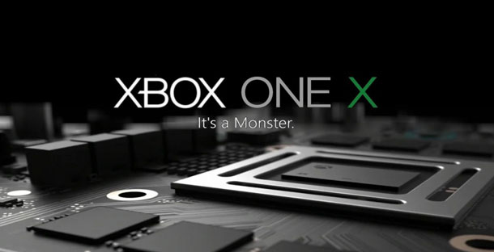

O Xbox One X é o novo console da família Xbox One que a Microsoft diz ser o mais poderoso videogame já lançado. Afinal, ele tem potência suficiente para rodar games em resolução 4K nativa, melhorar a performance dos jogos (inclusive em uma TV Full HD) e muito mais.
É uma atualização de console no meio de uma geração, um aparelho premium, para quem quer mais performance em um videogame.
O Xbox One X tem lançamento mundial previsto para o dia 7 de novembro por US$ 499. A Microsoft não anunciou uma data específica para o Brasil e o valor do console por aqui. Ao IGN Brasil, Mike Ybarra, executivo de Xbox, disse: "Vamos lançar o Xbox One X em 7 de novembro em todos os mercados de Xbox One. Hoje não temos informações específicas sobre os lançamentos em cada território, mas estamos focando em todos os mercados a partir de 7 de novembro.
São 6 teraflops dedicados ao processamento gráfico. De acordo com a Microsoft, o poder do aparelho é 40% maior do que qualquer console do mercado. Ele tem 12 GB de memória gráfica GDDR5 com buffers de 2160p. Tudo isso graças a CPU de 8 núcleos customizada pela AMD com clock de 2.3GHz.
É o menor Xbox já criado. Tem 29,5 cm x 23,5 cm x 6 cm. Seu peso é de 3,810 quilos possui leitor de disco Blu-ray preparado para o 4K/HDR e todos os jogos lançados no passado e no futuro para o Xbox One funcionam no Xbox One X.
No Xbox One X, os jogos vão ter um visual melhorado tanto em uma TV 4K quanto em um aparelho com resolução FullHD (1080p). Há melhorias de performance de quadros por segundo, qualidade de texturas e mais elementos na tela.
Há recursos como High Dynamic Range (HDR) e Wide Colour Gamut que vão melhorar efeitos de luz, sombra e reflexos.
Todos os controles, microfones e outros acessórios compatíveis com o Xbox One e com o Xbox One S funcionam normalmente no novo videogame. Ele tem um controle do Xbox One S (modelo novo) na cor preta. Volantes, controle remoto e o Xbox Elite Controller também podem ser usados no X. Possui entrada HDMI-in (para assistir TV pelo console) e HDMI-out ; 1 entrada USB 3.0 frontal; 2 entradas USB 3.0 traseiras; sensor IR; saída de áudio SPDIF digital; entrada de cabo de Ethernet.
O console tem 1 TB de memória interna para jogos digitais e para saves. Não foi revelado se os games vão ocupar mais espaço no HD por conta de texturas de maior resolução, por exemplo, mas é provável que sim.
Games do Xbox One receberão melhorias para poder rodar em 4K e com outros recursos gráficos no Xbox One X. Entre os jogos da própria Microsoft estão Gears of War 4, Forza Horizon 3, Killer Instinct, Halo Wars 2 e Minecraft. Já Final Fantasy XV, Resident Evil 7, Ghost Recon: Wildlands e Rocket League estão aqueles desenvolvidos por outras produtoras, como Ubisoft, Capcom e Square Enix.
A atualização também vale para os games apoiados pela iniciativa ID@XBOX. São eles: ARK: Survival Evolved, Ashen, Astroneer, Battlerite, Black Desert Online, Brawlout, Conan Exiles, Dark and Light, Dunk Lords, Fable Fortune, Fortnite, Hello Neighbor, Minion Masters: Forced to Duel, Observer, Ooblets, Osiris New Dawn, Paladins: Champions of the Realm, Path of Exile, PlayerUnknown's Battlegrounds, Raiders of the Broken Planet, Riverbond, Robocraft Infinity, Shift, Strange Brigade, Surviving Mars, The Artful Escape, The Darwin Project, The Last Night, Unruly Heroes e We Happy Few.